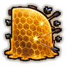
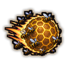
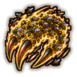
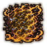
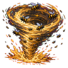

Technique trees › Clans and bloodlines
Kamizuru clan
7 techniques in the Clan tab.
Needs the Kamizuru gene.
Hachi Senbon: Bee Stinger CB
Chakra 13 to 34. Fire a volley of chakra-hardened stingers. Shotgun Bee fires many more.
Hachi Senbon: Bee Stinger CB
Chakra 13 to 34. Fire a volley of chakra-hardened stingers. Shotgun Bee fires many more.
Fire a volley of chakra-hardened stingers. Shotgun Bee fires many more.
| Rank | Chakra | Cooldown | Class level |
|---|---|---|---|
| C | 13 | 7.5 s | 3 |
| B | 34 | 10 s | 9 |

Hachitate: Bee Shield D
Chakra 20. A wall of honeycomb around a spot catches enemy shots for twenty seconds.
Hachitate: Bee Shield D
Chakra 20. A wall of honeycomb around a spot catches enemy shots for twenty seconds.
A wall of honeycomb around a spot catches enemy shots for twenty seconds.
| Rank | Chakra | Cooldown | Class level |
|---|---|---|---|
| D | 20 | 1 hour | 3 |

Hachi Bakudan: Bee Bomb CB
Chakra 20 to 35. Throw a ball of explosive bees. The greater version blasts a wider area.
Hachi Bakudan: Bee Bomb CB
Chakra 20 to 35. Throw a ball of explosive bees. The greater version blasts a wider area.
Throw a ball of explosive bees. The greater version blasts a wider area.
| Rank | Chakra | Cooldown | Class level |
|---|---|---|---|
| C | 20 | 15 s | 5 |
| B | 35 | 25 s | 10 |

Hachitsume: Bee Claw D
Chakra 12. Sting one enemy at close range with a claw of bees, pumping them full of venom.
Hachitsume: Bee Claw D
Chakra 12. Sting one enemy at close range with a claw of bees, pumping them full of venom.
Sting one enemy at close range with a claw of bees, pumping them full of venom.
| Rank | Chakra | Cooldown | Class level |
|---|---|---|---|
| D | 12 | 10 s | 2 |
Hachimitsu: Bee Honey CB
Chakra 25 to 40. Healing honey for an ally's wounds.
Hachimitsu: Bee Honey CB
Chakra 25 to 40. Healing honey for an ally's wounds.
Healing honey for an ally's wounds.
| Rank | Chakra | Cooldown | Class level |
|---|---|---|---|
| C | 25 | 1 hour | 5 |
| B | 40 | 1 hour | 11 |

Hachi Ishū: Bee Swarm B
Chakra 35. A swarm of bees stings everything in an area for five seconds, leaving venom behind.
Hachi Ishū: Bee Swarm B
Chakra 35. A swarm of bees stings everything in an area for five seconds, leaving venom behind.
A swarm of bees stings everything in an area for five seconds, leaving venom behind.
| Rank | Chakra | Cooldown | Class level |
|---|---|---|---|
| B | 35 | 1 hour | 9 |

Hachi Arashi: Bee Storm A
Chakra 70. A storm of bees rages over a wide area for eight seconds.
Hachi Arashi: Bee Storm A
Chakra 70. A storm of bees rages over a wide area for eight seconds.
A storm of bees rages over a wide area for eight seconds.
| Rank | Chakra | Cooldown | Class level |
|---|---|---|---|
| A | 70 | 3.2 hours | 15 |
Chakra is the technique's base cost, the number in its def. In play it is multiplied by the pawn's chakra energy usage multiplier, which traits (chakra artificer 90%, volatile conduit 110%), World of Naruto genes and jutsu enhancements change, so the technique window can show a slightly different number for each ninja. Cooldowns are in-game time, as the technique window shows them, and the pawn's cooldown stat shortens or lengthens them. World of Naruto gives every ninja a base of 100 maximum chakra; genes and traits change it.